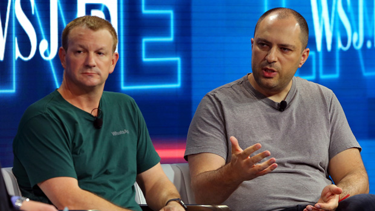

WhatsApp launches unread message filter for everyone.
Last Monday (22), through a curiously written tweet, WhatsApp
announced the arrival of a filter for unread messages. According
to the company, the novelty should guarantee "extra control" and
greater "organization" for its users — preventing them from
forgetting to answer their "dads" and "sisters".
 Maykon Lafaette
Maykon Lafaette

Whatsapp logo
Tested for at least three months, the new WhatsApp feature appeared
in two different forms. In the most current and definitive, it can
be activated directly in the "balloon" options presented when
selecting the search tool. Quite simple, its function is to separate
messages not yet viewed from others, a very welcome change for
correspondents who usually take a little longer to respond. In
Brazil, the novelty has already begun to be gradually made
available. Before checking if it is already available on your
device, it is worth checking if there is any update for WhatsApp on
the Play Store or App Store. On the other hand, WhatsApp Web should
receive the feature without requiring extra steps, as well as the
desktop version of the messenger.
In addition, development for other devices such as consoles and
even smart devices such as smartwatch was announced. All of them
with this filter to increasingly protect the user and always please
him. The date for this release has not yet been announced, but
George Gradiny, one of the developers, said that the Beta phase is
already underway.

Jan Koum and Brian Acton, first whatsapp developers.
"We were thinking about how whatsapp has grown over time and has
made life easier for millions of users. That's why we constantly
need to improve security and features. So the growth of its usage
grows equally with the quality of it. Other projects are being
thought about, but that's all I can say for now." Said Jan Koum in
an interview this Friday.
Font: WPP
Read more about:
Charger,
Electromagnetism,
Electronics,
Hobby,
Electromagnetic Induction,
Apple,
Induction Charging
.